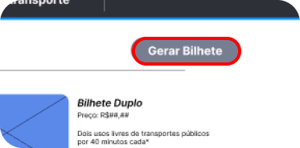
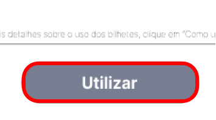

Geração
Para gerar um novo bilhete, o botão 'Gerar Bilhete' na tela principal
te redicionará para a devida tela, aceite os termos de uso e você terá
o seu bilhete

Utilização
É necessário autenticar o bilhete gerado para o seu uso, na página
inicial clique no botão 'Utilizar' para iniciar o processo

Após autenticá-lo você estará livre para usar o seu blihete Renacard
no tempo delimitado pelo tipo do mesmo
Recarga
Para recarregar um bilhete existente, escolha uma das opções na tela
principal e digite o número do bilhete desejado a ser carregado

Existem quatro opções de bilhetes em que você pode escolher:
Bilhete Único
Após a autenticação você terá um período de 40 minutos onde poderá
uitilizar o transporte público livremente
Bilhete Duplo
Após autenticação você terá um período de 40 minutos onde poderá
uitilizar o transporte público livremente, o bilhete duplo pode ser
autenticado duas vezes
Bilhete 7 Dias
Após a autenticação você terá um período de uma semana (7 dias)
minutos onde poderá uitilizar o transporte público livremente
Bilhete 30 Dias
Após a autenticação você terá um período de um mês (30 dias) minutos
onde poderá uitilizar o transporte público livremente
Relatório
O relatório de recargas exibe as informações de um específico bilhete
gerado no sistema Renacard
Para a voltar a página inicial clique na logo